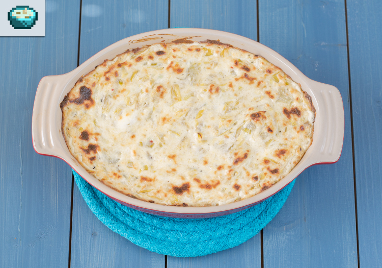

Artichoke Dip

Take a break from your daily chores with this delicious Artichoke Dip from Stardew Valley!
Ingredients
- 35 grams scallions
- 10 grams minced garlic
- 370 grams artichoke hearts roughly chopped
- 43 grams butter
- 430 grams cream cheese room temperature
- 40 grams parmesan cheese shredded
- 90 grams gontina cheese shredded
- pepper
- nutmeg
Directions
- Preheat oven to 375 degrees
- In a pan over medium heat, melt butter.
- Add garlic and scallion, heat for 5 minuets.
- Add the artichoke hearts and cook for another 5 minuets.
- In a bowl, combine the cream cheese, parmesan cheese, and fontina cheese.
- Add the artichoke heart and mix well.
- Season with nutmeg, salt, and pepper.
- Place the dip in a baking dish, bake for 20 minutes.
- Turn the broiler on and broil until the top browns.
- Serve with chips or baguette slices.
Home Page